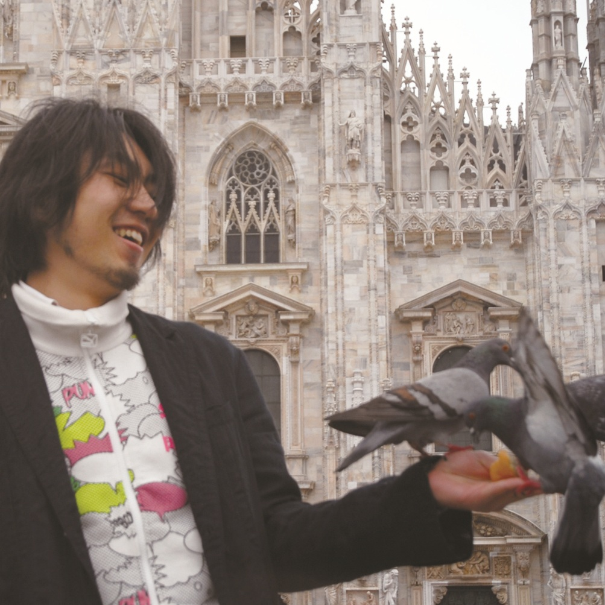

小松 宏誠
東京大学大学院学際情報学府 非常勤講師
自分でアート作品を生み出そうとする事。まだ見ぬ自分の作品・仲間の作品を集め、ひとつの展覧会として企画し、アピールする事。制作展では、学生主体でこの2つの課題のクリアを目指します。今回集まったのは、アートを専門として研究しておらず、アート制作のトレーニング経験も無い、はじめて顔を合わせるような20名です。一見無謀なよう課題ですが、制作展に参加する学生たちには、達成できる能力と環境が備わっています。学生それぞれの専門や研究は、アートを制作する上でも、とても豊かなバックグラウンドとなり、メディアアートという領域は、そのバックグラウンドから生まれる手法やテクノロジーを用いた表現をすんなりと受け入れるのです。
今回、夏の「東京大学制作展extra2013」では、それぞれのイメージを飛び立たせた様な、はじまりの展示となり、冬の制作展では、飛び立たせたイメージをメディアアート作品として、しっかりと着地させる、完成度の高い展示となる予定です。学生はもちろん、この展覧会に出会ってくださる方々にも、なにか素敵な事がはじまるような体験となる事を願っています。